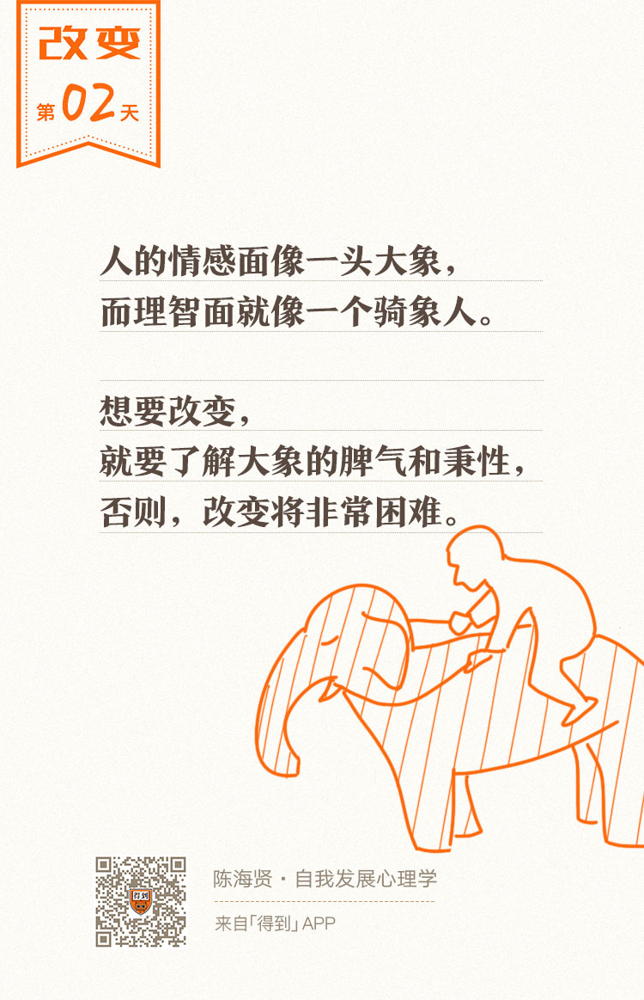

02丨改变本质：如何创造新经验？

欢迎来到《自我发展心理学》。
你好，我是陈海贤。
我曾经跟人开玩笑说，我们对改变的成功经验可能并不多，但对改变的失败，一定经验丰富。
比如，我们经常会做新年计划，每年跨年的时候，都会又憧憬又悔恨地跟自己说：新的一年一定要不一样，要变成更好的自己。第二年、第三年……同样的计划塞满了抽屉，可最后，它们都仍然只是计划。
行为的改变为什么这么难？我们到底要怎么做，才能启动行为的改变呢？
这一章，我们就来讲讲这个话题。这一章会分成两个部分：
第一部分，我会介绍阻碍改变的心理机制，谈谈为什么改变这么难；
第二部分，我会讲怎么实现改变。怎么走出心理舒适区、怎么获得改变的动力、怎么迈开最小的第一步。
今天，我就先来讲讲改变的本质到底是什么。
两个自我：大象和骑象人
有一项医学调查说，心脏科医生告诉患者，如果他们不改变自己的生活习惯，比如不健康的饮食、不运动、抽烟等，他们将必死无疑。
可即使在这种情况下，也只有七分之一的人会真正改变。其余七分之六的人是不想活了吗？当然不是。他们也知道该怎么做，可就是没法改变。
这是我们在改变中经常遇到的问题。
我们心里有一个行为标准，希望自己做到，却经常被现实打脸。好像心里有一个自己，而现实却是另一个自己。
有时候，我们明明讨厌自己的某个行为，比如拖延症，却怎么也改不了。这个时候，我们就会有很多的内疚和自责，就会怪自己意志力薄弱，不够努力。
可是，内疚和自责并不能带来改变。你应该认真思考的是，我为什么控制不住自己呢？
也许你没有意识到，你的躯体里其实有两个自我。一个是感性的自我，一个是理性的自我。
区分这两个自我，理解他们之间的关系，对于理解改变，非常重要。
积极心理学家乔纳森·海特曾用一个有趣的比喻，来描述两个自我之间的关系。他说：
对于改变而言，理智提供方向，而情感提供动力。
如果你的理性想要改变，就需要了解感性大象的脾气和秉性，利用大象的特点，这样才能事半功倍。否则，改变将非常困难。
这个比喻能帮助我们形象地记住两个自我的关系。在整个这一章，我们会一直用这个比喻，我希望能有一头大象和一个骑象人在你心里住下来。
那么，大象的脾气是怎么样的呢？它有三个特点。
第一个特点：力量大。
一旦它被激发了，理智就很难控制它。
第二个特点：它是受情感激发的。
它既容易被焦虑恐惧等消极情绪驱动，也容易被爱、怜悯、同情、忠诚等积极情绪所驱动。所以它既可能成为改变的阻力，也能成为推动改变的强大动力。
第三个特点：它是受经验支配的。
也就是说，它只认我们切实体会过的“经验的好处”，而不认我们理智所构想的“期待的好处”。
大象的前两个特点，比较好理解。今天，我们来重点讲讲它的第三个特点。这个特点与行为改变是直接相关的。
大象转向“经验的好处”
什么是经验的好处呢？想要理解它，你得先理解期待的好处。
期待的好处是我们想象中的好处。比如：
- 我们都能想到，每天早起跑步，会更有精神；
- 不拖延，会更高效、更有成就感；
- 坚持健康饮食会让我们的身体会变得更好。
但是这些是我们想象出来的，我们并没有深刻地体验过这种好处。
相反，我们体验过睡懒觉时温暖的被窝，打游戏的快乐，胡吃海喝的感官刺激，这些都变成了我们亲身经历过的好处。
- 期待的好处是抽象的，而经验的好处是具体的；
- 期待的好处发生在未来，而经验的好处发生在过去或者现在；
- 期待的好处是被教导出来的，而经验的好处是我们通过亲身体会，真实地感受到的。
当这两个好处发生冲突时，虽然骑象人想要寻求那个“期待的好处”，而大象却不由自主地转向了那个“经验的好处”，哪怕有时候这个“期待的好处”要比“经验的好处”大得多。
要理解大象的选择，我们需要回忆一下中学生物知识：巴甫洛夫和他的狗。你还记得条件反射吗？
最开始，巴甫洛夫的狗看到肉会流口水，听到铃声没反应。但是，巴甫洛夫每次在给狗喂肉之前，都会先打铃。
久而久之，狗只要一听到铃声，哪怕没有肉，也会流口水。这就叫条件反射。
一个条件反射包括了三个因素：刺激、反应和强化。在这个实验里，刺激是铃声，反应是狗流口水，强化是肉。
这里的强化，其实就是经验的好处。
一旦我们的某个行为获得了这种好处，它就会被保留到我们的生命里，哪怕我们没有意识到，它仍然会影响我们的行为。
强化不仅有正强化，还有负强化。什么意思呢？
正强化是当你表现出某种行为时，通过增加你想要的结果，让你的行为更巩固。
- 比如：获得高额奖金会让你努力工作。
而负强化是当你表现出某种行为时，通过减少你不想要的结果，来让你的行为更巩固。
- 比如：为了防止被扣奖金，你也会努力工作。
现在，你应该理解了大象为什么总是不由自主地转向“经验的好处”，因为它会通过强化，塑造我们的行为，所以行为的改变才会那么难。
“经验的好处”很隐蔽
前不久，我接待了一个来访者，大学刚毕业不久，在一个陌生的大城市工作。
每天晚上下班，她都会搜寻当地有名的小吃店，大吃特吃，直到吃撑了还不能停手。她很苦恼，想要改变，却控制不住自己。
为什么她会这么依赖食物呢？
她跟我说，她所在的公司是一个世界500强的大公司，压力很大，经常要加班到八九点。她一个人租着房子，回家空荡荡的没什么意思。所以寻找美食成了她唯一的娱乐。
每天下班以后，她都会坐上地铁，到某个人来人往的闹市区，找个甜品店坐下。她喜欢一边吃，一边看那些熙熙攘攘的人群，感受闹市的烟火气。
每次吃完，一想到要回到那个空荡荡的家，她就跟自己说：那不如再待一会，反正回去也没意思。结果就吃撑了。
我想请你跟我一起思考：
1. 在这个例子中，引起行为的刺激是什么？
不是美食，而是孤独。这个刺激是从她下班想到“自己回家后一个人空荡荡”开始的。
2. 与刺激相对应的应答行为是什么？
也不是吃，而是包括吃在内的挤地铁、到闹市区，看着人群并感觉到烟火气，这一系列的行为。
食物当然是一种强化，但它带来的最重要的好处，不是美味，而是用寻找食物的过程，用吃所带来的感官刺激，避免了自己在异乡感受到的压力和孤独感。
这么说来，她的大吃特吃，不仅是一种获得食物的正强化，更是一种通过吃来逃避孤独的负强化。而这种强化，让她很难控制自己，做出改变。
说到孤独的时候，我看到她眼里有泪花，我知道我说的是对的。
于是，我就跟她说：“人生已经很艰难了，你也不需要完全否定吃美食，这毕竟也是一个减压方法。最重要的是，我们要找一个更健康的替代方式，比如跑步健身、参加读书俱乐部、跟朋友看电影等等。”
我建议她每周一三五去试验新方法，二四六用“吃”这个老方法，看看哪个会感觉更好一些。
最后，她找到了一家羽毛球俱乐部。在那边认识了几个朋友，慢慢的，她也能够控制自己的饮食了。
所以，当我们改变失败的时候，责怪自己是没有用的，因为我们的行为并不是独立于环境而存在的。
所谓的“好处”或者“坏处”，其实就是我们与环境交换信息，获得反馈的过程。刺激和强化，就是我们与环境建立联系的方式。
改变的本质：创造新经验
讲到这里，我们就讲到了改变的本质。
改变的本质是什么呢？其实就是创造新经验，用新经验来代替旧经验的过程。
创造新经验需要通过新的行为，获得新的反馈，新的强化，并亲身感受到它。亲身感受到的经验，这跟你听来的道理很不一样。
如果你只有想象中的期待，而没有新行为所带来的新经验，改变就很难发生。
总结一下。这节课我们了解了改变的本质，那就是创造新经验。这个理念也将是我们这一章的核心观点。
我们也知道了，“经验的好处”会通过强化塑造我们的行为，让我们的新经验变成新习惯。
这么看，改变似乎也不难啊，我们去创造新经验，并不断强化它就好了吗？事情没有那么简单。
下节课，我们就来讲讲，为什么我们总是抱住旧经验不放，它背后的心理机制是什么。
我们下一讲再见。
